Part A — The Power of Diffusion Models
This section follows the project handout: setting up DeepFloyd IF, implementing sampling loops, and exploring several applications of diffusion models using the provided denoisers and schedulers.
Exploring DeepFloyd IF, forward/denoising processes, and fun applications like inpainting, visual anagrams, and hybrid images.
In Part A of Project 5, I experiment with a pre-trained text-to-image diffusion model (DeepFloyd IF) to understand how diffusion-based generative models work in practice. I implement the forward diffusion process, several denoising schemes, and then apply them to tasks like image-to-image translation, inpainting, visual anagrams, and hybrid images.
All core work for Part A is done in the provided Colab notebook, but this webpage summarizes my implementation, visual results, and short reflections for each sub-part.
Tip: All deliverable slots have [TODO] markers so I can quickly drop in figures and captions from my notebook.
This section follows the project handout: setting up DeepFloyd IF, implementing sampling loops, and exploring several applications of diffusion models using the provided denoisers and schedulers.
I created a Hugging Face account, accepted the license for DeepFloyd/IF-I-XL-v1.0, and generated a read-only
access token. This token was then used in the Colab notebook to authenticate against Hugging Face and download
the DeepFloyd IF models.
Since the T5 text encoder is quite large, the project provides hosted Hugging Face Spaces (clusters A and B)
that turn text prompts into 4096-dimensional prompt embeddings. I used these spaces to build a dictionary from
my own prompts to their embeddings, saved as a .pth file and loaded in Colab.
I experimented with several fun prompts, including contrasting pairs for later visual anagrams and hybrid images (for example, prompts describing different objects, styles, or scenes that could be combined).
num_inference_steps settings. [TODO]In Part 1, I implement the forward diffusion process, one-step and iterative denoising, and then use these routines for generation, classifier-free guidance, image-to-image translation, inpainting, visual anagrams, and hybrid images.
The forward process adds noise to a clean image x₀ according to the schedule ᾱₜ:
xₜ = √ᾱₜ · x₀ + √(1 − ᾱₜ) · ε, where ε ~ N(0, I).
Using the provided alphas_cumprod, I implemented forward(im, t) to generate noisy versions
of the Campanile at various timesteps, and visualized the increasing noise for t ∈ {250, 500, 750}.
forward(im, t) completed in Colab notebook.


I attempted to denoise the noisy Campanile images using classical Gaussian blur filtering via
torchvision.transforms.functional.gaussian_blur. The goal is to see how far a simple low-pass filter
can go on its own.
t = 250, 500, 750), show the best Gaussian-denoised result side-by-side.
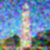
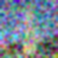
Using stage_1.unet and the prompt embedding for a high quality photo
, I performed a single
denoising step on noisy Campanile images. The UNet predicts the noise (first 3 channels of the output), which
I then used with the forward equation to estimate x₀.
t = 250, 500, 750.
I defined a strided timestep schedule starting from 990 down to 0 with a stride of 30, then used the provided
reverse-diffusion formula and add_variance to iteratively denoise a noisy Campanile image. Every 5th iteration
is visualized to show the gradual improvement.
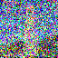
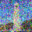
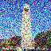

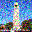
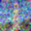
I sampled random noise at the noisiest timestep and ran the iterative denoiser with the prompt a high quality photo
to generate novel images from scratch.
a high quality photo.
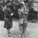
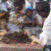
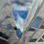
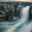
I extended the iterative denoiser to compute both unconditional and conditional noise estimates and combined them using
ε = εᵤ + γ · (ε꜀ − εᵤ), with guidance scale γ = 7.
For unconditional guidance, I used the empty prompt "". The conditional embedding corresponds to
a high quality photo
.
iterative_denoise_cfg completed in Colab notebook.a high quality photowith
γ = 7.
Starting from the original Campanile image, I added a small amount of noise and then denoised with CFG (using
a high quality photo
) to project the image back to the natural image manifold. By varying the starting index
(i_start ∈ {1, 3, 5, 7, 10, 20}), I obtained a continuum of edits from subtle to more drastic.
i_start ∈ {1, 3, 5, 7, 10, 20}.
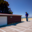
I downloaded a non-photorealistic image from the web and also created two hand-drawn sketches. Using the same SDEdit-style pipeline with CFG, I projected them onto the natural image manifold at different noise levels.
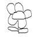
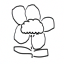
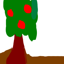
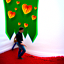
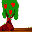
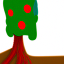
Using a binary mask and the forward process, I implemented an inpainting routine that keeps pixels outside the mask consistent with the original (with appropriate noise) and lets the diffusion model hallucinate new content inside the masked region.
inpaint function.
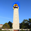
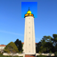
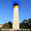
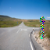
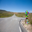
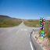
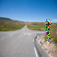
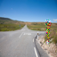
Here I reused the SDEdit pipeline but replaced a high quality photo
with more specific prompts from my
custom prompt set, guiding the projection so that the final images look like both the original image and the new text description.
I implemented visual_anagrams, which denoises an image with two prompts simultaneously by flipping the
image for the second prompt and averaging the two guided noise estimates. The result looks like one prompt upright
and the other when flipped upside down.
visual_anagrams completed in Colab notebook.
Inspired by Project 2, I implemented make_hybrids using the diffusion model's noise estimates. For two
prompts, I computed ε₁ and ε₂, then combined low frequencies from one with high frequencies
from the other using Gaussian blur for the low-pass component and a residual for high-pass.
make_hybrids in Colab notebook.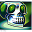